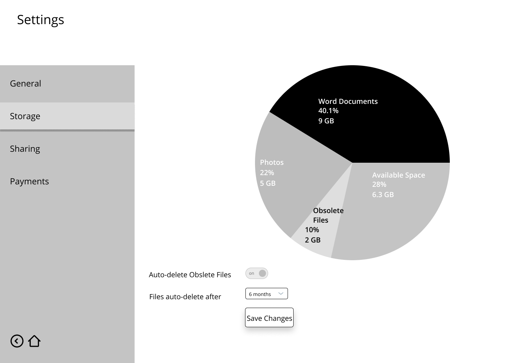
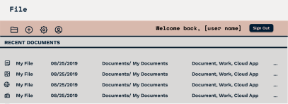

File
Rid your cloud of digital clutter.
Research
Survey
My first step was to articulate the relationship users had with their current cloud storage service. My survey reached over 50 people.
Identify Competitors
100% of users use more than one cloud storage service
94% of users use GoogleDrive
75% of users use DropBox
7% of users use Box
Favorite Features
87.5% of users share ownership and use collaboration features
75% of users create and edit files
63% of users use cloud storage to backup their devices
68% of users use cloud storage as their main storage
Pain points
Users were unhappy with the amount of free storage available
Users wished that the orginazational structure was more intuitive
63% of users use cloud storage to backup their devices
68% of users use cloud storage as their main storage
What users store
86% of users store word documents
80% of users store spreadsheets
73% of users store images
67% of users store slideshows
Competitive Analysis
I opted to research Google Drive, Dropbox, and Box. There was a fair amount of consistency throughout their product features. It was clear that to compete, a new service would have to offer something that set itself apart.
Read a more in-depth analysis here.
Strenghts
Name recognition
Desktop, mobile, and web-based interfaces available
New technology being integrated seamlessly into the platform
Weaknesses
Organization is limited to folders
Most desirable features are only available to paying customers
Digital "clutter"
Opportunities
More elaborate organizational features
”Freemium” structure that entices users with other features that are more than just extra space
Straightforward file and ownership sharing
Threats
Oversaturation of market
Expansive hosting capabilities
User Personas
In an effort to flesh out a more detailed target audience, I interviewed 4 of the individuals I had surveyed. I asked more in-depth questions and actually prompted them to explore their main cloud storage services to see if there was “digital dead weight”. From these answers, I crafted a few user personas. My user personas were individuals from various backgrounds but who all struggled with keeping their documents organized.

Janessa L.
Miami, Fl
“I would love to use just one cloud storage app that is efficient, organized, and affordable.”
Goals
Use of one cloud storage system
Synching capabilities
Access to lots of free space, or reasonaly priced storage solution
Frustrations
Work spans across two different storage spaces
Organizational tools aren’t intuitive

Theo S.
Chicago, Il
“I wish storage solutions weren’t so expensive and were more consistent. I like to be able to access all of my work across different devices without having to pay $20/month.”
Goals
Find a more afforable cloud storage solution
Be able to access all files on various devices
Be able to share ownership of files easily
Frustrations
Storage solutions for small businesses can get pricy
Preceived value for paid storage is low because the system doesn’t always work well
Buggy sharing capabilities
User Stories
After completing the personas, I was able to identify File’s MVP and create user stories.
As a new user |
I'd like to share a document with others |
High Priority |
|---|---|---|
As a returning user |
I'd like to view a breakdown of my storage |
High Priority |
As a returning user |
I'd like to share document ownership |
High Priority |
As a returning user |
I'd like to auto-delete obsolete files |
Medium Priority |
As a returning user |
I'd like to add organizational hashtags and keywords |
Low Priority |
View all my user stories here.
User Flows
Using my user stories, I created user flows to determine how my product would be structured

Visual Design
Sketches & Wireframes
Following my research I first sketched out the necessary screens and then developed lo-fidelity wireframes.

Dashboard Sketch
Storage Display Sketch
Dashboard Wireframe

Settings Wireframe
View my InVision prototype here.
Branding
My first step was to establish a name for my product. I wanted something that was catchy and could be used as a noun and as a verb. Since “File” is ubiquitous when discussing cloud storage, I felt like it was a great fit for the product.
I then created a moodboard to articulate the style and feeling of the product.
Using the name “File” as a jumping-off point, I began to develop my logo. I sketched 40 different iterations and performed several rounds of preference testing.
File’s brand is trustworthy, professional, modern, and youthful. To visually articulate the brand story I used dark blues contrasted with brighter peach hues and compatible typography.
View my full style guide here.

High Fidelity Mockups
My next steps were to combine my visual and branding standards and my wireframes in Figma to make high fidelity visual mockups and turn them into a working prototype in InVision. These two phases went through a number of revisions and iterations which provided me with the insight to create a comprehensive product.
Dashboard
Document with comment card
View my high fidelity prototype here.
User Testing
I conducted two rounds of user testing. One with my wireframes to reveal structural flaws and the second with using my high fidelity mockups. I asked my users to complete the tasks outlined in my user stories and was able to develop a better product based on their feedback. Below are examples of visual development that are a result of my user testing.
User Testing Tasks
Signing Up
Logging In
Create a new document
Share a document
View storage breakdown
Delete obsolete files
Settings Screen

Dashboard Header
Conclusion
In creating File, I was able to gain a much greater understanding of the design process. I learned a tremendous amount through the revision process. At times it was a bit painful, but I saw the merit and necessity of revision and was able to further develop my eye for design. I got to see the design cycle in action, I often went back to my user research to answer my own questions concerning my designs. The importance of user testing and the MVP were made evident throughout this process, I found that revisiting goals through user testing was a great way to develop and articulate standards. Throughout this process, I was able to flesh out my own personal process. It taught me how to receive and implement feedback and criticism properly and how to successfully create a digital product.